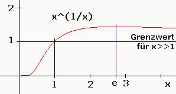
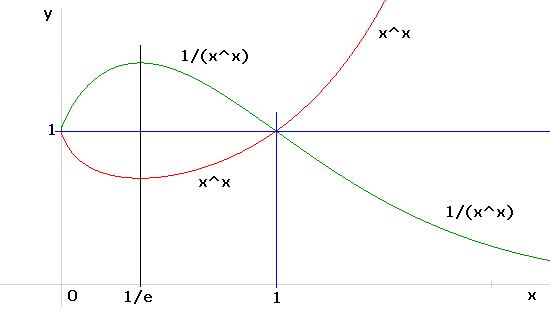

Startwert:
x = ln(A)/2 (fr A > 1000) oder x = ln(A) (fr 1000 > A > e*e)
oder x = 1 (fr A < e*e)
Newton-Verfahren:
Schleife: x = (x + ln(A))/(1.0 + ln(x));
Anderes Verfahren:
Schleife:
x0 = ln(A)/ln(x);
xm0 = sqrt(x*x0);
x1 = A^(1/xm0);
x2 = A^(1/x1);
xm = sqrt(x1*x2);
x = ln(A)/ln(xm);
E = x^x;
if (abs(E/A-1)/Genauigkeit < 1.0) break;
Fr A < 0.69220270.. = (1/e)^(1/e) kein x ermittelbar
Konstanten:
1.6180339887498948482045868343656 = phigold = (sqrt(5)+1)/2
2.7182818284590452353602874713527 = e
7.389056098930650227230427460575 = e^2
15.15426224147926418976043027262 = e^e
20.085536923187667740928529654582
= e^3
8103.0839275753840077099966894328
= e^9
0.065988035845312537076790187596846 = 1/(e^e)
0.13533528323661269189399949497248
= 1/(e^2)
0.36787944117144232159552377016146
= 1/e
0.6922027041603439407918677636835 = (1/e)^(1/e)
1.4446635270126840720352160449 = 1/((1/e)^(1/e))
 
Hinweis:
Die Funktionen x^(1/x) und x^x haben bei der Eulerschen Zahl x=e bzw. x=1/e
Extremwerte:
Eulersche Zahl e als Limes in x^x : xhx2022.htm
Herleitung Newton-Rekursion:
A = x^x = exp(ln(x^x)) =
exp(x*ln(x))
Erste Ableitung:
(x^x)' = exp(x*lnx) * (x*lnx)'
(x^x)' = exp(x*lnx) * (lnx + 1)
(x^x)' = x^x * (ln(x) + 1)
Newtonverfahren:
x(i+1) = x(i) - f(x(i))/f(x(i))'
f(x) = 0 = x^x - A
x = x - (x^x - A) / (x^x
* (ln(x) + 1))
x = x - (1 - A/x^x) / (ln(x) + 1)
x = x - (1 - 1) / (ln(x) + 1)
Hauptnenner:
x = ((x*(ln(x) + 1) - 0) / (ln(x) + 1)
x = (x*ln(x) + x) / (ln(x) + 1)
Ergebnis (Iterationsschleife):
x = (x + ln(A)) / (1
+ ln(x))
=============================